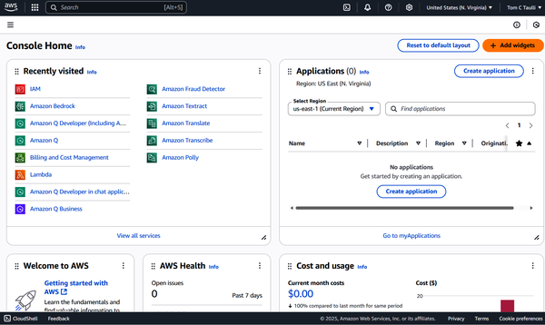
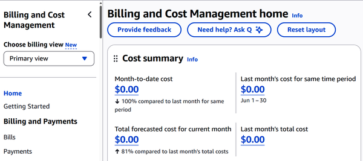

In this chapter, we’ll explore AWS, and you’ll learn what you need to know for the exam. To get started, you’ll need to set up an account. I’ll show you how to do this and fill you in on the benefits of the AWS Free Tier.
Then we’ll explore the AWS Management Console, and I’ll walk you through the most valuable AWS services, such as EC2, S3, RDS, IAM, and Lambda. I’ll also introduce AWS’s essential cost management tools. Understanding all these pieces will make the rest of AWS much easier to grasp.
If you’re just getting started with AWS, it’s worth taking a close look at the AWS Free Tier. It’s essentially Amazon’s way of letting you kick the tires on their massive cloud ecosystem without racking up a bill right away. But like most good things, the details matter.
There are actually three flavors of the Free Tier: a six-month offer, an always-available tier, and a set of short-term trials. Each one works a little differently, so let’s break them down.
This one kicks in the moment you create a new AWS account. For the next six months, you get a monthly quota of popular services for free. This is essentially your cloud sandbox—with some guardrails.
You’ll get 750 hours of EC2 usage per month (enough to run a small instance 24/7), 5 GB of S3 storage, and 750 hours of a managed database using RDS, among other things. It’s plenty to host a low-traffic web app or tinker with a side project. Just keep an eye on the limits. If you go over them, you’ll start seeing charges.
Not everything shuts off when the six months are up. Some services are “always free,” meaning the free usage tier sticks around as long as you have an AWS account. This includes one million Lambda invocations per month (for serverless apps), 25 GB of storage with DynamoDB, and some basic CloudWatch monitoring.
These offers aren’t just for hobbyists. They’re useful for lightweight production workloads or for handling sporadic traffic.
A third category often gets overlooked: short-term trials. These are time-limited but start only when you first use the service. For example, Amazon Lightsail—an easy-to-use virtual private server (VPS) option—gives you 750 free hours a month for three months. Other services like SageMaker (for machine learning) and Redshift (for analytics) also offer time-based trials to help you explore more specialized tools.
However, when it comes to the Free Tier, here’s what you need to keep in mind: if you’re part of an AWS organization, only one account gets to use the Free Tier benefits. So if you’re spinning up test environments in multiple linked accounts, you might end up surprised by charges.
Getting started with AWS doesn’t take long, but there are a few steps worth walking through carefully. AWS is powerful, but like anything in technology, it pays to slow down at the beginning so that you don’t miss something important later.
Here’s how to get your account up and running:
Go to https://aws.amazon.com and click “Create account.” You’ll find the button tucked in the top-right corner of the page.
Enter your basic login information. After that, AWS will send you an email to confirm your address.
Fill out your contact details. This includes your full name, phone number, and address. You’ll also choose an account type—Personal or Business. If you’re experimenting or learning, Personal is fine.
Add a payment method. Even if you plan to stick with the Free Tier, AWS still requires a valid credit or debit card. They won’t charge you unless you go over the free limits, but it’s how they verify real users.
Verify your phone number. You can choose either a text message or a voice call to receive a PIN. Enter the PIN to confirm you’re reachable.
Pick your support plan. Unless you have specific needs, go with the Basic support plan—it’s free and perfectly adequate when you’re starting out.
Once everything checks out, you’ll land in the AWS console, which you can see in Figure 2-1. This is your home base for everything you’ll do in AWS.

You will start out as a root user. This is tied directly to the email address you used during sign-up. The root user has full access to everything in your AWS environment, including billing, security settings, and every service AWS offers. It’s the account with the keys to the kingdom.
Because of that, the best practice is not to use the root user for your day-to-day work. Instead, AWS recommends that you immediately create an IAM (Identity and Access Management) user. AWS IAM lets you set up individual accounts with just the permissions needed for a specific task or role—nothing more. That way, if your credentials ever get compromised, the damage is limited.
When setting up an AWS account, it’s a good idea to add multifactor authentication (MFA). This will add another layer of security.
The Management Console can look a little overwhelming at first, but it’s more approachable than it seems. AWS gives you a dashboard made up of widgets—little panels that show useful information or shortcuts.
Here’s a quick tour of what you’ll see:
Click the square grid icon in the top-left to bring up a full list of AWS services. There’s a search box too, which comes in handy once you start remembering names like “EC2” or “S3.”
AWS keeps track of services you’ve used recently, so you can jump back into them without hunting.
This widget shows your deployed apps and the AWS regions they live in. You can also spin up a new application from here.
Think of this as your AWS orientation. You’ll find links to documentation, tutorials, and general getting-started material.
If there’s an issue affecting your resources—like an outage or scheduled maintenance—it’ll show up here.
This is your billing system. It shows your current month’s spend and gives you a forecast based on your usage.
AWS flags anything that looks off, like missing patches, overly permissive settings, or anything that could put your account at risk.
And yes, you can rearrange the widgets. Drag them around until the console suits your preferences.
Even if you’re just experimenting or running small workloads, you may still rack up unexpected charges. One missed setting, one overprovisioned resource, and suddenly your “Free Tier” isn’t so free anymore.
Fortunately, AWS gives you tools to stay ahead of surprises. You have to know where to look—and how to set things up right from the start. Here is a quick overview; we’ll cover these services in more detail in future chapters.
You’ll find most of what you need in the Billing and Cost Management Dashboard. Type billing into the AWS console’s search bar and click Billing and Cost Management. Figure 2-2 shows this dashboard.

Here, you can do the following:
View your current charges
Set preferences for invoice delivery and currency
Track your Free Tier usage
Opt in to billing alerts
Dig into detailed reports on usage and cost
Budgets let you draw a clear line in the sand: “I don’t want to spend more than X.” AWS will let you know when you’re getting close or when you’ve crossed the line.
To create a budget, follow these steps:
In the AWS console, search for “budgets.”
Choose “Create budget,” then select “Cost budget.”
Give your budget a name.
Set the amount (fixed or recurring).
Choose whether it’s monthly, quarterly, or custom.
Configure your alerts—this is where you can choose thresholds, like “alert me at 80%.”
You can set email notifications, SNS (Simple Notification Service) topics, or both. The first two budgets are free, which is usually enough for most individuals or small teams.
If you’re using AWS under the Free Tier, you should enable usage alerts. They’ll warn you when you’re approaching or exceeding Free Tier limits—before those overage charges kick in.
To enable alerts, follow these steps:
Go to Billing Preferences
Check the box to receive Free Tier usage alerts
Provide an email address
Managing AWS costs doesn’t have to be stressful. A little upfront effort—like setting budgets and enabling alerts—goes a long way. Treat it like a smoke alarm: it might feel optional, right up until it saves your bacon.
AWS offers a massive catalog of services—well over 200 at last count—covering everything from computing and storage to AI, analytics, and Internet of Things (IoT). This range gives you much flexibility. But for the CLF-C02 exam, you don’t need to know all of them. The exam focuses on the foundational pieces—the core services that power cloud infrastructure, keep it secure, and help manage costs. These are the pieces that will be most relevant to your preparation for the exam.
We’ll cover the AWS services worth prioritizing (and we’ll certainly cover these in more depth in the rest of the chapters). They show up often in real-world use cases, and more importantly, they reflect core AWS concepts like elasticity, the Shared Responsibility Model, and pay-as-you-go pricing. Here’s a quick breakdown of the services:
EC2 is a virtual machine in the cloud. It lets you spin up servers quickly, choose your operating system (OS), pick from a range of instance types, and configure the networking to fit your needs. It’s flexible and powerful, and it can be used for both test environments and full-blown production apps.
EC2 is a classic infrastructure as a service (IaaS) offering. You’ll also see it come up a lot in cost optimization strategies like rightsizing, where you match instance size to actual usage.
Amazon S3 is an object storage service designed for storing and retrieving data at scale. It supports a wide range of use cases, such as storing media files, backup data, and application assets. The service provides high durability, availability, and accessibility over the internet. Think of it as an external hard drive with unlimited storage at low rates.
Amazon RDS is a managed service for relational databases that supports multiple database engines, including MySQL, PostgreSQL, Oracle, and SQL Server. It automates administrative tasks such as software patching, backups, and database scaling, reducing the need for manual management.
Redshift is AWS’s managed data warehouse built for heavy analytics. If your job involves slicing and dicing large datasets or building out business intelligence dashboards, this is your tool.
Lambda lets you run code without provisioning servers. You just write your function, define what triggers it—like a file upload or an API request—and AWS handles the rest. It’s especially useful for automation and microservices.
CloudWatch is your eyes and ears in the AWS ecosystem. It collects metrics, logs, and events so that you can monitor performance, trigger alerts, and dig into issues when things go sideways.
IAM handles permissions and access. You can create users, assign them to groups, and set up fine-grained access policies.
IAM is essential for every AWS environment. Whether you’re locking down S3 buckets or controlling access to EC2 instances, this is your gatekeeper.
By default, CloudTrail logs all the API calls made in your account, such as who did what, when, and from where. This visibility is crucial for security, auditing, and compliance.
If something strange happens, CloudTrail helps you track down what went wrong (or who made the change). It’s not flashy, but it’s one of AWS’s most important behind-the-scenes services.
This tool gives you a visual breakdown of where your money is going. You can view spending over time, drill into usage by service, and spot trends that could lead to savings or surprises.
It’s a must-use if you’re serious about keeping costs under control, especially in multiaccount setups or fast-growing environments.
However, the AWS Cost Explorer does not provide real-time details. It can take up to 24 hours for the updates.
Budgets lets you set spending thresholds and get notified before things spiral. You can track both cost and usage, making it a smart tool for individuals, teams, or anyone watching the Free Tier limits.
AWS Bedrock is a platform that allows for building generative AI applications. With it, you can select from a list of foundation models, such as those from Amazon, Anthropic, Mistral, and Meta. You can also configure the models and integrate them as APIs.
Besides these capabilities, AWS Bedrock allows for evaluating the performance of AI applications and scaling them for production.
In this chapter, we explored the core AWS services that every cloud practitioner should know—services like EC2, S3, RDS, Lambda, IAM, and CloudWatch that form the foundation of most cloud architectures. These tools are building blocks of real-world solutions used by startups, enterprises, and governments alike.
You also got a tour of the AWS Free Tier, learned how to set up your account the right way, and discovered essential cost management tools like Budgets and Cost Explorer. Taken together, these basics will help you start strong, avoid common mistakes, and make informed decisions as you continue your AWS journey.
In the next chapter, we’ll shift our focus to understanding cloud architecture principles.
To check your answers, please refer to the “Chapter 2 Answer Key”.
What is a key purpose of the AWS Free Tier?
To provide permanent access to all AWS services
To test only serverless services
To let users explore AWS services at no cost within specific limits
To avoid the need for a credit card during signup
Why should you avoid using the AWS root user for daily tasks?
It cannot access billing features.
It expires after 30 days.
It has full access and poses a security risk if compromised.
It requires reauthentication every hour.
What is a key function of AWS Identity and Access Management (IAM)?
Managing user access and permissions
Running serverless applications
Tracking spending and usage
Storing objects in the cloud
What is Amazon Elastic Compute Cloud (EC2) primarily used for?
Running virtual servers in the cloud
Hosting object storage
Managing relational databases
Creating IAM policies
Which AWS service logs all API calls and helps with security auditing?
Amazon Redshift
AWS IAM
AWS CloudTrail
Amazon CloudWatch